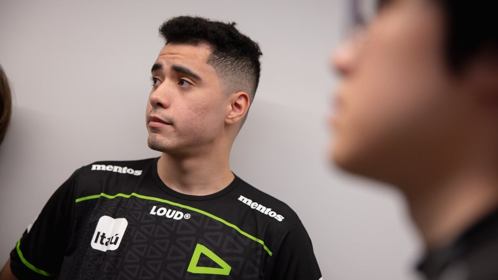

Ceos e a equipe da LOUD enfrentam obstáculos em suas negociações de renovação.
Atual tricampeã do CBLOL, a LOUD pode sofrer baixas em sua base do elenco de League of Legends, incluindo Ceos, considerado por muitos o melhor jogador do Brasil atualmente. O Mais Esports apurou que a negociação entre Ceos e LOUD enfrenta algumas turbulências no percurso. Isso porque a organização e o jogador não entraram em um consenso sobre as condições para que o vínculo fosse renovado. O Ilha das Lendas também publicou a respeito do assunto anteriormente. No momento, Ceos entende que, para renovar, precisa de uma valorização financeira, já que venceu três campeonatos consecutivos e é o melhor jogador do país, mas a LOUD, por agora, não demonstra vontade de fazer um movimento brusco nesse sentido.
Veja todos os furos e movimentações das equipes na janela de transferências do LoL
Kabum estuda oferta Excepcional por Ceos
Se a LOUD enfrenta problemas para entrar em consenso de valores com o suporte, a Kabum pretende chegar com os dois pés no peito. Os Ninjas, inclusive, estudam uma boa proposta por Ceos. Nessa oferta, o jogador, hoje, se tornaria o atleta mais bem pago de todo o ecossistema de LoL no cenário brasileiro. Ou seja, a LOUD precisaria cobrir, ou ao menos chegar próximo de um valor semelhante, já que Ceos gostaria de continuar na organização. Para a próxima etapa, a Kabum tem um projeto ambicioso. Mesmo não conseguindo TitaN, que optou ir pra paiN, os Ninjas estão em busca de nomes consolidados e acima da média, para voltar a figurar no topo do campeonato.
O que dizem LOUD e Kabum?
Procurada pela reportagem, a LOUD diz não ter nada a comentar sobre o assunto. Já a Kabum diz não comentar sobre especulações de mercado a respeito de transferências no CBLOL.
Além disso, fontes internas da LOUD afirmam que estão em andamento conversas para tentar a renovação com o elenco visando a próxima temporada. Mas ainda há entraves entre as partes!
- Veja também: Possível reforço para atual Tricampeã Brasileira!